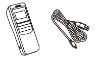

使い方
【事前準備】
本機能を使用する際には、お手元に記録に使用したMS916バーコードリーダーと、USB-Cケーブルを１本ご用意ください。

【使用手順】
- バーコードリーダーのトリガーボタン（中央の青色のボタン）を長押しして電源を入れ、スキャン画面が起動することを確認します。（Scan..のような画面が表示されれば起動完了です）
- バーコードリーダーのアップボタン・ダウンボタン（右側の繋がった２つのボタン）を同時に押し、メインメニューに遷移します。
- バーコードリーダーのアップボタン・ダウンボタンを使用して「Data & Memory」を選択し、トリガーボタンで決定し、「Data & Memory」メニューに遷移します。
- バーコードリーダーのアップボタン・ダウンボタンを使用して「Send Batch」を選択し、トリガーボタンで決定します。
- 下記のような画面が表示されることを確認し、バーコードリーダーとPCをUSB-Cケーブルで接続します。（事前に接続しても問題ございません）
- 下記のような画面が表示されることを確認し、バーコードリーダーとPCをUSB-Cケーブルで接続します。（事前に接続しても問題ございません）
- 本画面の「接続」ボタンを押下し、表示された一覧から「Unitetch Virtual COM Port」を選択します。
- 本画面の「未接続」が「接続済み」に変更されたことを確認します。
- バーコードリーダーの「SEND BATCH」画面で「SEND」を選択した状態でトリガーボタンを押します。
- 下記の画像のように送信件数/総件数が表示されれば送信が完了です。
- 本画面の操作履歴の一覧に、バーコードリーダーから送信された操作履歴が表示されることを確認します。
- 必要に応じて「ダウンロード」ボタンから記録を保存してください。
- バーコードリーダー側のログが不要になった場合は、SEND BATCH画面でEraseを押して、ログを削除してください。
- 走査が終了した場合は、バーコードリーダーの各画面でEXITを押し、スキャン画面まで戻って記録することが可能です。
- 本画面で続けて操作履歴を読み取りたい場合は、一度「切断」ボタンを押して接続を切った後に、再度１からの操作をしてください。